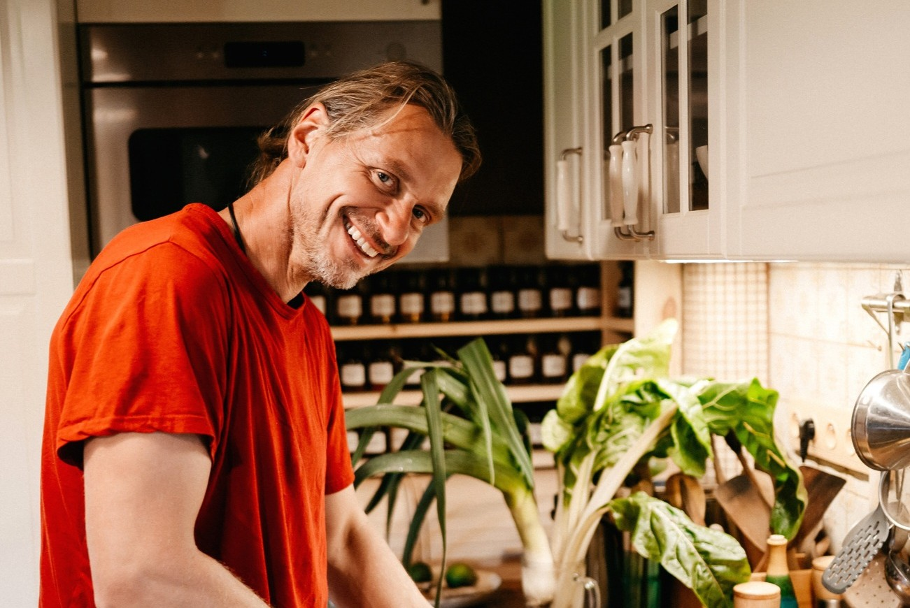
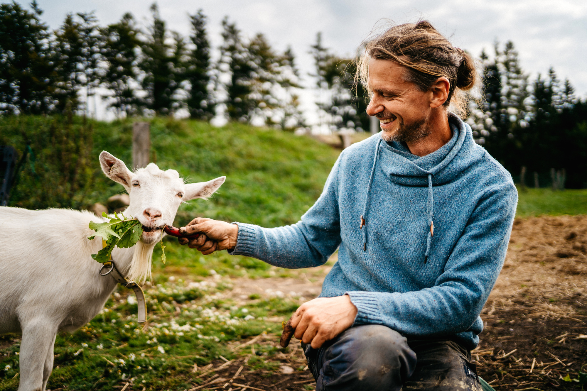

Zjisti, co tvému tělu prospívá a co mu škodí.
Začni 5denním restartem trávení — zdarma.
Začít restart zdarma
Zjistíme tvůj konstituční typ (dóšu) podle Áyurvédy. Trvá to 5 minut.
Na základě tvé dóši ti napíšeme, co jíst, čeho se vyvarovat a na co si dát pozor.
Každý večer vyplníš krátký dotazník (2 minuty). Každý den ti pošleme vyhodnocení — co tvé tělo říká a jaké vzorce vidíme.
Dostaneš celkové vyhodnocení restartu a doporučení, jak pokračovat dál.
Za 5 dní budeš vědět, jak tvé tělo reaguje na jednodušší stravu. A rozhodneš se, jestli chceš pokračovat.
Začít restart zdarmaProč Svatý Vavřinec?
Když římský prefekt požadoval po Vavřincovi, aby mu vydal poklady církve, Vavřinec přivedl chudé, nemocné a slepé. „Toto jsou naše poklady," řekl.
Zaplatil za to životem. Ale řekl pravdu.
Věřím, že nám pravdu říká také naše tělo. Ne kalorie, trendy nebo tabulky — naše tělo. Když bolí, říká pravdu. Když se cítí dobře, říká pravdu. Stačí se mu naučit naslouchat.
Svatý Vavřinec je patron kuchařů. A patron pravdy, která se nehodí do systému. Přesně jako jídlo, které léčí, i když to není v pilulce.
Tvoje tělo ti říká pravdu. Naslouchej mu.

Jmenuji se Tomáš Béza a říkají mi Doktor Hlad.
17 let v armádě, Ph.D. ve výživě, biofarma, 7 dětí — a jednoho dne jsem u sebe rozpoznal revmatoidní artritidu. Tehdy jsem pochopil, že výživa není teorie. Je to každodenní rozhodnutí, které určuje, jestli tvé tělo bude v rovnováze, nebo v zánětu.
Velmi dobře vím, co znamená, když se imunitní systém obrátí proti vlastnímu tělu. A také jak velkou roli může hrát jídlo — díky kontrolované stravě mám artritidu dlouhodobě pod kontrolou.
Program Jídlo jako lék vznikl z osobní zkušenosti a let výzkumu. Ne přes univerzální diety — ale přes systematickou eliminaci a reintrodukci potravin. Pomáhám lidem s autoimunitními, zažívacími a metabolickými potížemi najít svůj individuální jídelníček. Výsledkem je osobní Semafor potravin — mapa na celý život.
Není to teorie — je to praxí ověřená cesta.
Tvůj Doktor Hlad a
AI asistent Sv. Vavřinec 🤗